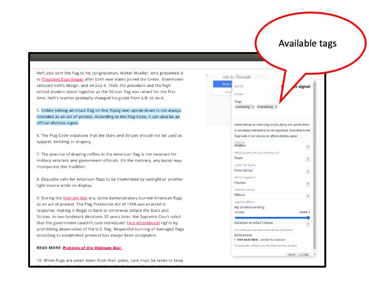
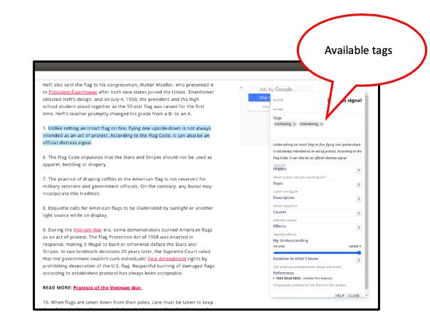

-
A tag is a word or phrase you use to classify information, e.g., interesting, hypothesis; plan for a task, e.g., review, look up, etc. SPInStudy assigns an “Important” tag for you. Change the tag to use a more helpful tag.
- When you open a note you can enter tags in the text box titled "Tags".
 You can choose a tag from the popup menu, or type in your own tag. Click in the tag space to see the tags available.

You can choose a tag from the popup menu, or type in your own tag. Click in the tag space to see the tags available.
